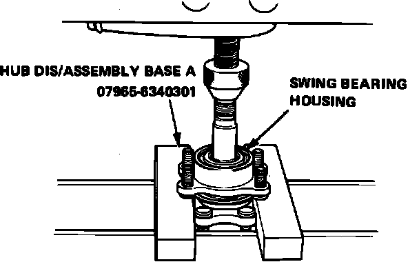
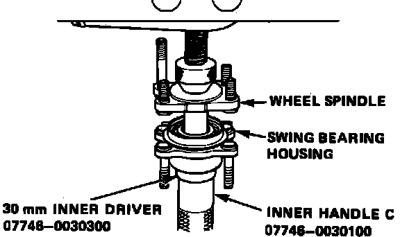

Rear
Fig. 1 Exploded View Of Rear Suspension Components W/disc Brakes:

Fig. 2 Exploded View Of Rear Suspension Components W/drum Brakes:

Fig. 13 Swing Bearing Housing Removal:

Fig. 14 Swing Bearing Housing Installation:

Swing Bearing
1. Raise and support rear of vehicle and remove wheel and tire assembly.
2. Remove splash guard and caliper bracket.
3. Remove stabilizer control plate, then unfasten trailing arm from swing bearing housing unit, Figs. 1 and 2.
4. Remove rear wheel spindle from axle beam, then separate spindle from swing bearing housing, Fig. 13.
5. Remove swing bearing inner race using a suitable puller.
6. Reverse procedure to install. Press wheel spindle into bearing as shown in Fig. 14.